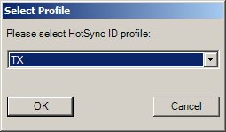
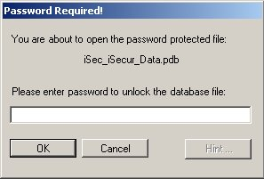
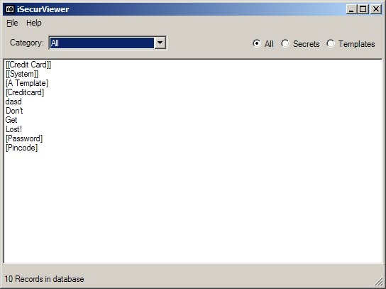
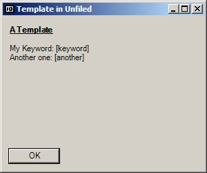

iSecurViewer v1.5 |
iSecurViewer is used to view the secrets stored in the iSecur secrets database. iSecurViewer requires Microsoft .NET framework v2.0.
You can support this project by donating any amount to my Pay Pal account.
Install iSecurViewer by running the application and click Next a couple of times and then Finish. You will now have a iSecurViewer group in your start menu. Launch iSecurViewer. If you get some messages saying something about debug then you need to have Microsoft .NET framework v2.0 installed - please do so using the link above or by going to Windows Update.
When launched for the first time iSecurViewer prompts you to select your HotSync Profile. You need to have transferred the iSecur database before you can view it - this step will auto located it given your profile. The profile can be changed from the main menu. If you hit Cancel you will get a standard file requestor and you can then browse to the iSecur database file if it is placed in a non standard path.
Enter the password to unlock the database. If you have previously set a Password Hint for the database you can recall that by pressing the Hint button.
On the main screen all your secrets are listed. Use the various filters to locate the entry to be shown and then double click the entry.
Click OK to dismiss the entry and go back to the main form.
iSecurViewer may some day evolve to a real product. Currently it is made as a functioning proof of concept. It is somewhat insecure as it cannot guarantee the encryptedness of data swapped/paged to disk. This means that if someone steals your computer the bad guy _may_ be able to see some of the data in plaintext.
You have been warned.
2006-11-28 v1.5 * Upgraded to match v1.4 of iSecur. * Optimized some of the main list and category list updates. 2006-11-07 v1.4 * Sorting in v1.3 didn't work. Reverted somewhat to what v1.2 did and it seems to work. 2006-11-02 v1.3 * Secrets on the main form are now sorted. * Switching Profiles now works as expected - you no longer have to select the "Load Profile" menu item twice to switch profiles. 2006-10-28 v1.2 * Can now open databases created by iSecur-1.3. 2006-10-05 v1.1 * Now renders tabs in secrets. * Secrets can be copied to other programs. * If a secret is long it can now be scrolled. 2006-07-10 v1.0 * Initial version.